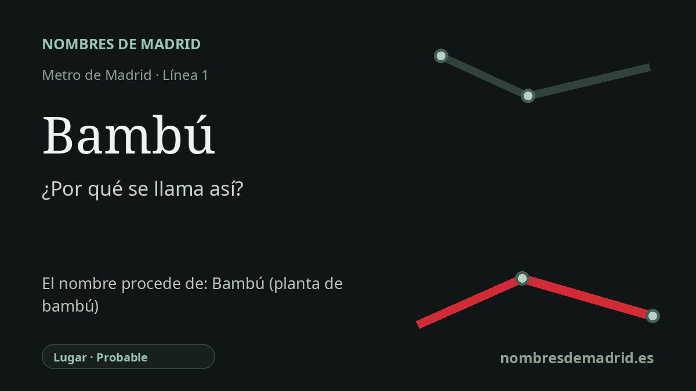

Publicado el · Investigación de Nombres de Madrid · Cómo verificamos cada origen · 7 fuentes consultadas
Respuesta rápida
Bambú toma su nombre de la calle del Bambú, donde se encuentra el acceso de la estación en Chamartín. La calle forma parte de un pequeño conjunto local de nombres vegetales, con vías como Yuca, Hiedra y Buganvilla.
La historia del nombre
Bambú es un nombre de estación derivado del callejero inmediato. El Consorcio Regional de Transportes de Madrid sitúa el acceso de la estación en la calle del Bambú, 14, y el Callejero histórico oficial registra la calle del Bambú en Chamartín desde el 20 de febrero de 1948. La explicación más sencilla y mejor sustentada es, por tanto, que Metro adoptó el nombre de la calle donde se encuentra el acceso.
La palabra que hay detrás de la vía es el sustantivo común español bambú: una gramínea leñosa asociada en los diccionarios a cañas ligeras, resistentes y a paisajes tropicales o subtropicales. En esta zona de Chamartín el nombre no aparece aislado. El plano zonal del CRTM muestra también cerca la calle de la Yuca, la calle de la Hiedra y la calle de la Buganvilla, lo que convierte a Bambú en parte de un pequeño conjunto botánico del callejero.
El distrito que rodea la estación tiene una historia mucho más antigua que la propia parada. Chamartín corresponde al antiguo municipio de Chamartín de la Rosa, anexionado a Madrid por decreto en 1947. La historia municipal del distrito señala que, salvo el antiguo casco rural, buena parte del territorio tuvo un desarrollo urbano tardío y se transformó sobre todo después de la Guerra Civil, con nuevas infraestructuras, viviendas y usos empresariales.
La estación, en cambio, es reciente. Se inauguró el 11 de abril de 2007, cuando la línea 1 se prolongó desde Chamartín hasta Pinar de Chamartín; en la misma operación de transporte la línea 4 llegó también a Pinar de Chamartín. Eso explica que una línea de metro histórica tenga en su extremo norte una estación moderna con nombre de calle botánica, y no con un nombre de aldea, parroquia o finca antigua.
No consta ningún nombre anterior de la estación. El origen directo, la calle del Bambú, está sólidamente apoyado; la explicación más profunda de por qué la calle recibió ese nombre botánico es menos segura, porque no consta el acuerdo municipal original de denominación. Las calles vegetales próximas apoyan esa lectura temática, pero siguen pendientes la decisión administrativa y la motivación del nombre viario del 20 de febrero de 1948.